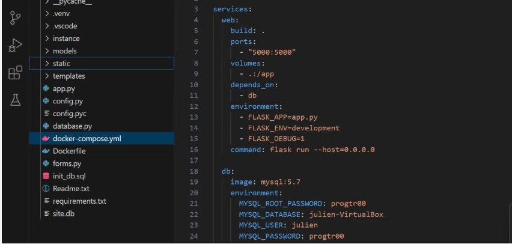

Concevoir et déployer une application communicante en intégrant la sécurité.
Niveau 3- Ce que j'ai fait
- Le projet le plus probant est le portfolio dynamique Flask + Docker de la SAÉ 23 (note 19/20). Application web Python/Flask avec base de données MySQL, système d'authentification, formulaires CRUD pour la gestion des compétences, conteneurisée par Docker Compose pour un déploiement reproductible. L'AC33.03 a ensuite été pleinement exploité en SAÉ 5.01 : la plateforme TP n'est jamais exposée en HTTP brut, ne tourne pas en root, est isolée par NetworkPolicy et exposée uniquement via Traefik avec TLS et BasicAuth. La SAÉ 14 du S1 (20/20, première mise en ligne d'un site portfolio HTML/CSS conforme W3C) a posé les bases de cette progression.
- Pourquoi
- Une application connectée à Internet sans authentification, sans HTTPS et sans politique de privilèges minimaux n'est pas un produit utilisable, c'est une vulnérabilité publiée. Le BC03 demande explicitement d'intégrer les problématiques de sécurité dès la conception. Mon parti pris est défensif par défaut : moindre privilège, refus par défaut, principe du fail-closed.
- Comment
- Architecture trois-tiers (templates Jinja2, Flask blueprints, MySQL via SQLAlchemy). Authentification : sessions chiffrées, hachage bcrypt, protection CSRF Flask-WTF. Conteneurisation Docker Compose avec dépendance explicite, volumes persistants, variables d'environnement pour les secrets, réseau interne dédié. Runtime durci : utilisateur non-root, capabilities Linux réduites, image Python slim.
- Mes difficultés
- Principalement l'orchestration des secrets. Mettre les mots de passe en clair dans
docker-compose.ymlest un anti-pattern, mais les contraintes pédagogiques imposaient un déploiement sans dépendance externe. J'ai dû arbitrer un compromis (fichier.envignoré par Git, README explicitant la procédure de production), ce qui n'est pas idéal mais documenté. La gestion des migrations de schéma m'a aussi posé problème jusqu'à la découverte de Flask-Migrate. - Ce que j'en ai appris
- La sécurité d'une application est une posture transversale, pas une couche ajoutée. Elle se voit dans les dépendances, la structure du code, le déploiement, les secrets, les logs. La conteneurisation est une boîte à outils de sécurité bien utilisée (utilisateur non-root, capabilities limitées, image minimale, secrets externalisés), mais elle donne une fausse impression d'isolation si elle est mal utilisée.
- Ce que je ferais autrement
- Mettre en place un secret store (Vault ou Sealed Secrets Kubernetes) dès le départ. Intégrer une analyse statique de sécurité dans le pipeline (Bandit pour Python, Trivy pour les images Docker). Documenter explicitement la matrice des flux réseau entre conteneurs.

app.py, config.py, models/, templates/, forms.py, init_db.sql. Le docker-compose.yml orchestre deux services (web Flask et db MySQL 5.7) avec dépendance explicite, volumes et variables d'environnement.